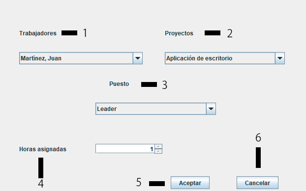

Asignar Proyecto
En la página principal encontrarás diferentes campos de texto mostrados en la siguiente imagen:

1.- Combo con todos los trabajadores disponibles. Al cambiar el trabajador seleccionado los proyectos cambiarán y solo aparecerán los proyectos a los cuales no ha sido asignado dicho trabajador.
2.- Proyectos a los cuales el trabajador no ha sido asignado.
3.- Puesto del trabajador en dicho proyecto.
4.- Horas semanales asignadas a dicho proyecto, no pueden ser superiores a 40.
5.- Botón para aceptar y asignar el proyecto al trabajador.
6.- Botón para cancelar la asignación y salir del formulario.